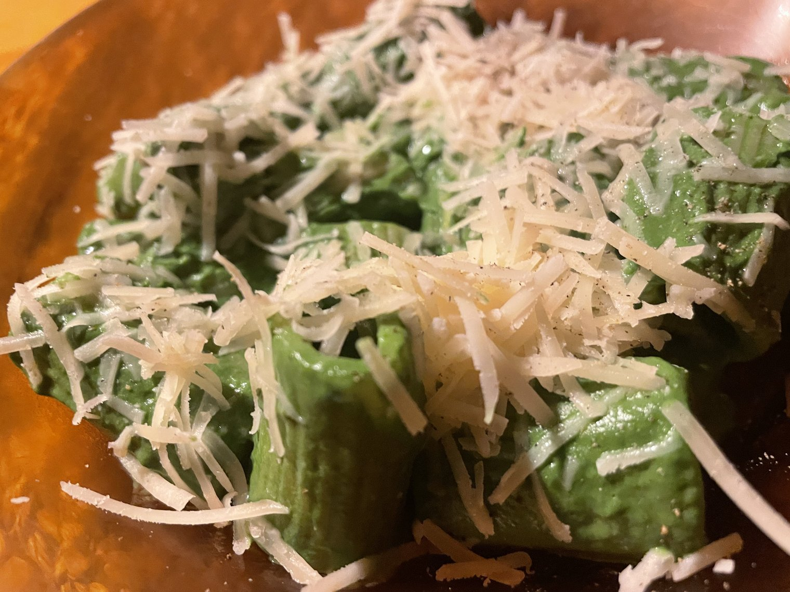

Pasta con salsa de espinacas y ricotta
Ingredientes
2×
- 200 g de pasta
- 200 g de espinacas
- 150 g de ricotta
- parmesano rallado

Preparación
Paso 1
Cocer 200 g de pasta (tipo rigatoni) en agua con sal.
Paso 2
Mientras, escaldar 200 g de espinacas y triturarlas con 150 g de ricotta, sal y pimienta, añadiendo un poco del agua de la pasta.
Paso 3
Mezclar la pasta con la salsa y servir con parmesano rallado por encima.